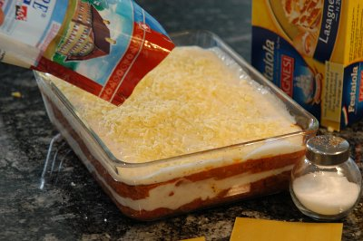

| Zutaten für 4 Personen: | |
| 300 g | Lasagne Blätter |
| 30 g | Reibkäse |
| Sauce Béchamel: | |
| 4 El | Mehl |
| 3 El | Butter |
| 3 dl | Milch |
| 4 dl | Wasser |
| 1 Tl | Salz |
| 1/2 Tl | Muskat |
| 20 g | Reibkäse |
| Sauce Bolognaise: | |
| 1 | Zwiebel (ca. 80g) |
| 1 El | Erdnussöl |
| 2 El | Mehl |
| 400 g | Hackfleisch gemischt |
| 1/2 Dose | geschälte Tomaten |
| 2 El | Ketchup |
| 2 Tl | Salz |
| 1 El | Italienische Kräutermischung |
| 1/2 Tl | Knoblauchsalz |
| 1/4 Tl | Pfeffer |
| 1/2 Tl | Zucker |
Das Mehl in der Butter dämpfen, mit dem Milchwasser ablöschen, würzen und 5 Minuten kochen lassen. Reibkäse zufügen.
Die gehackte Zwiebel im Öl dämpfen, das Fleisch beifügen, mit dem Mehl bestäuben und mitdämpfen. Die restlichen Zutaten dazugeben und 5 Minuten kochen lassen.
Lasagne: Saucen zubereiten. In bebutterte Gratinform (ca. 32 x 21 cm) 4 Esslöffel Béchamel-Sauce geben, mit Lasagne bedecken, Sauce Bolognaise darauf streichen. Lagenweise fortfahren, bis alle Zutaten aufgebraucht sind, mit Béchamel-Sauce abschliessen und mit Reibkäse bestreuen. Achten Sie darauf, dass die Lasagne reichlich mit Sauce bedeckt sind. Die Form mit Alufolie bedecken und während 30-40 Minuten bei 200° im Ofen backen. Folie entfernen und weitere 15 Minuten gratinieren.
Wichtig: Für ein gutes Gelingen dürfen die angegebenen Flüssigkeitsmengen nicht unterschritten werden. Die Lasagne müssen vollständig mit Flüssigkeit bedeckt sein.
Rückseite einer Lasagnepackung.
Hervorragend!
Am 2.5.2009 erneut zubereitet für das Foto. Mit halben Zutaten für meine kleinere Gratinform. Etwas mehr B&eacut;chamelsauce wäre gut gewesen um oben richtig dick abzuschliessen. Hat ausgezeichnet geschmeckt ist aber weniger etwas für Gäste da es nicht so trocken ist wie das Zeug aus dem Supermarkt und sich nicht richtig schön schöpfen lässt. RE
Frau Ingeborg Kohli aus Embrach schreibt mir am 22.3.2011: Ihr Lasagne-Rezept ist einfach genial einfach…… Ja,
ja, KEIN Schreibfehler. Bin zur Zeit bei meiner Tochter und „bekoche“ meine beiden Enkel. Der Älteste ist
Vegetarier. Darum habe ich Cornatur anstatt Hackfleisch verwendet. Ging halt nicht anders. Aber, das Echo war
sensationell. Auf Ihren Rat hin, wurde mehr B&eacut;chamel-Sauce „hergestellt“. Ihr Rezept ist klar, einfach,
praktisch, übersichtlich. Das wollte ich Ihnen nur mal so nebenbei mitteilen. Vielleicht freut es Sie.
Ja, das tut es. RE